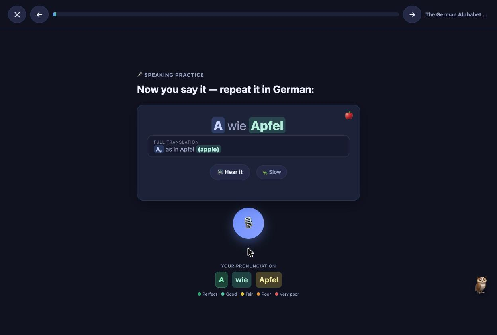
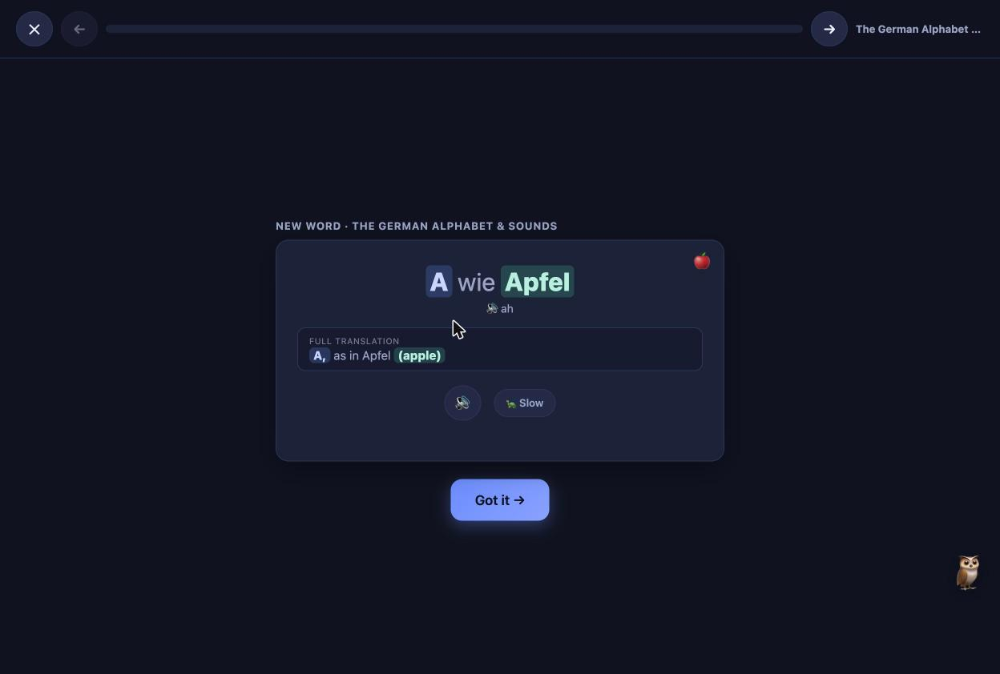
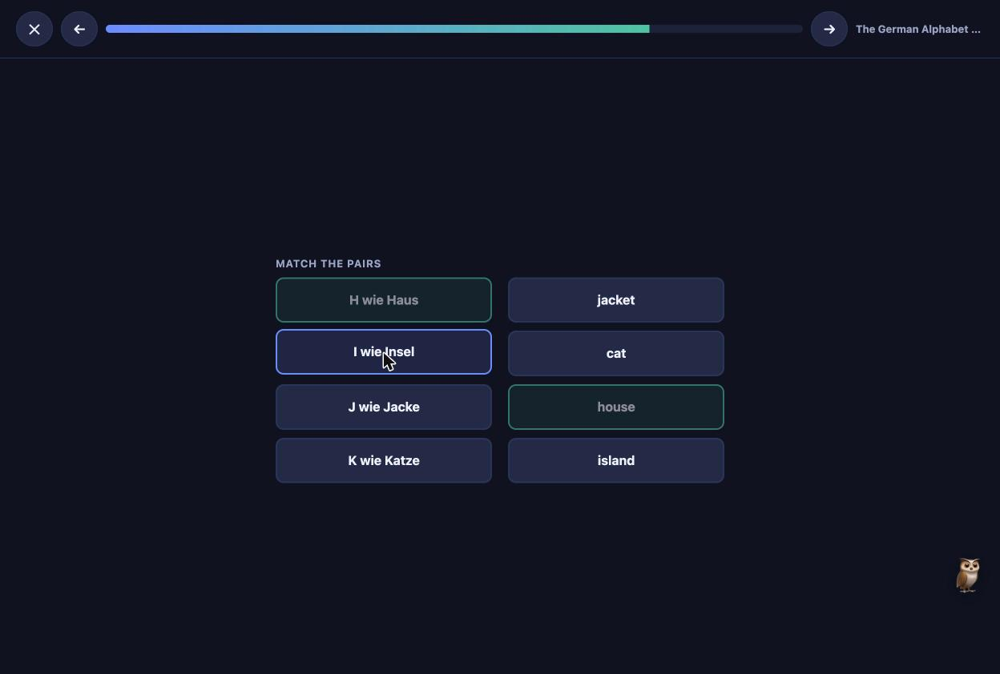
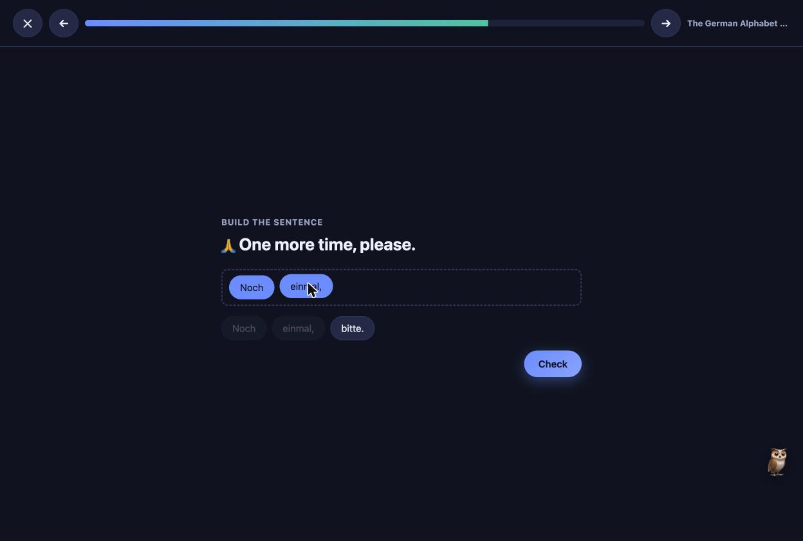
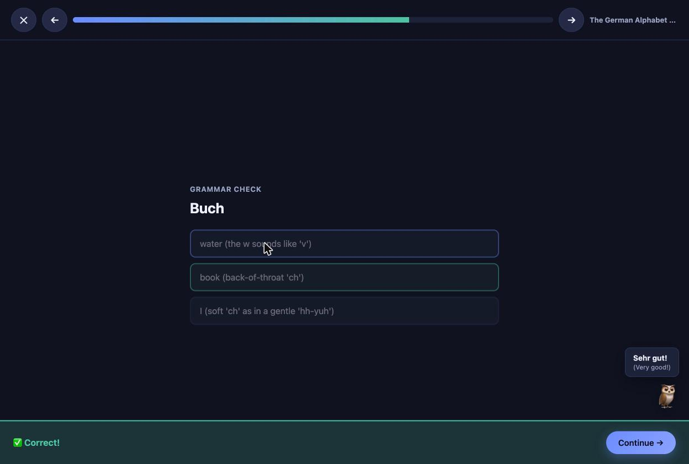
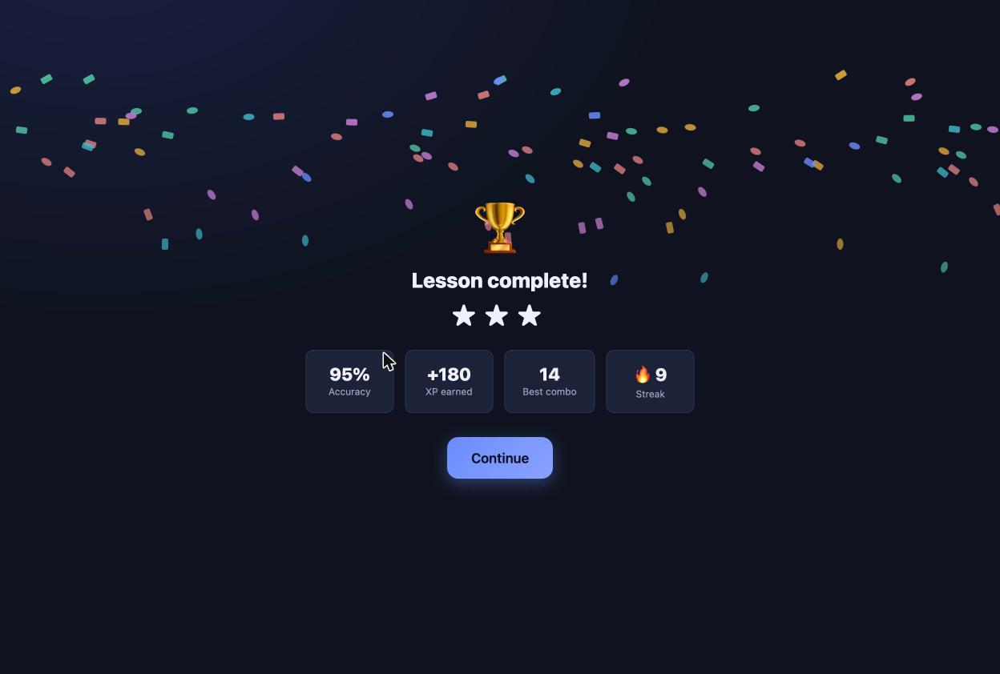
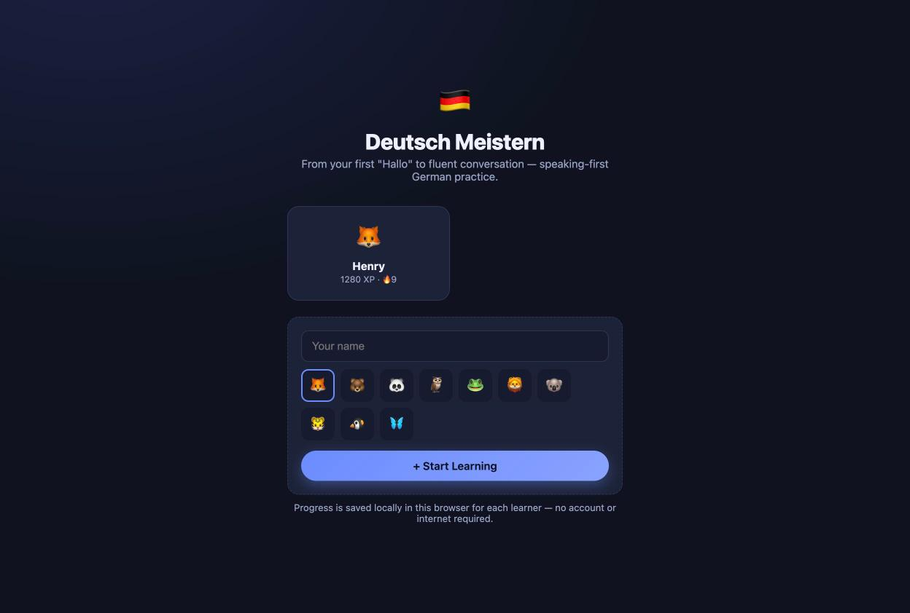
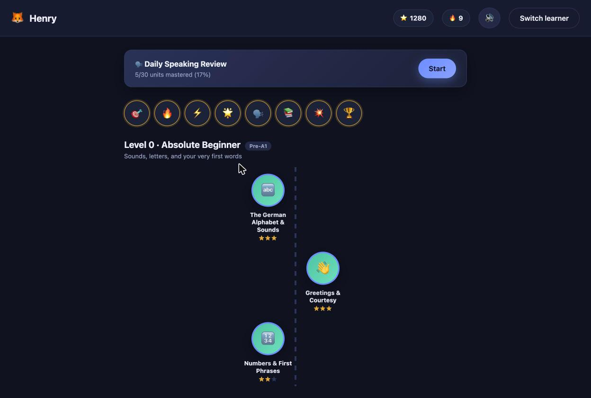

Deutsch Meistern: a German course that listens back
Language apps are good at vocabulary and bad at the mouth. The drills that matter most — hearing a sentence and producing it out loud — are the ones most apps skip, because grading speech is harder than grading a tap.
No account, no server
Profiles and progress are kept in the browser’s own storage. There is no backend to sign in to and nothing leaves the machine, which also means progress is per-browser rather than per-person — the honest trade for not asking anyone to create an account.
The question
Can the speaking half of language practice be built into something that runs entirely in a browser, with no account and nothing sent anywhere?
How it is being done
- Ten levels, roughly one per CEFR band, from the alphabet to fluency, each unit carrying its own vocabulary, phrases and grammar note.
- Eight exercise types generated from that one source — flashcards, multiple choice, listening, fill-in-the-blank, matching, word order, dialogue and speaking — so adding a unit adds every drill at once.
- It speaks and it listens. Prompts are spoken in German by the browser’s own speech synthesis; speaking exercises are graded by its speech recognition.
- Pictures where they help, never where they give the answer. Vocabulary can carry a small icon on flashcards and speaking cards, and it is deliberately withheld on graded questions.
- Streaks, XP and badges, because the hard problem in self-teaching is the fourteenth day, not the first.
Grading the half that is hard to grade
Tapping the right word out of four is easy to grade, so that is what most apps drill. Hearing a sentence, holding it, and producing it aloud is hard to grade, so it gets skipped — and it is the part that decides whether you can hold a conversation. Every new word here is shown, heard, and then said back by the learner before any quizzing starts; speaking is front-loaded rather than saved for the end of a unit.
German prompts are spoken by the browser’s own speech synthesis, with the available voices ranked so the most natural German voice is picked first. Replies go through the browser’s speech recognition; what it heard is compared to the target with a Levenshtein similarity score and aligned word by word, so the feedback names the word that was off instead of returning a single pass or fail.

| Similarity to the target | Shown as | Reading |
|---|---|---|
| 95–100% | dark green | Perfect |
| 85–95% | light green | Good |
| 65–85% | yellow | Fair |
| 50–65% | orange | Poor |
| below 50% | red | Very poor |
Browser speech recognition is imperfect, so the pass threshold is set generously and the per-word colours carry the detail. The point is to turn “try again” into something you can act on: you can see which word to fix.
What a lesson looks like
Each unit is written once as data — words, phrases, grammar examples, dialogue — and a small exercise engine turns that into all eight drill types. Adding a unit adds every drill for it, which is what made a thirty-unit curriculum practical to write by hand.





Profiles, streaks and getting to day fourteen


Profiles, XP, streaks and badges live in the browser’s local storage, and an in-lesson autosave means a tab closed mid-lesson picks up where it left off. The hard problem in teaching yourself a language is the fourteenth day, not the first, so the game furniture is there to make returning cheap.
Two decisions I reversed
The other reversal was the alphabet. Read as bare letters, the synthesised German was odd and taught nothing, so every letter became a full phrase — A wie Apfel — printed with its English underneath. The learner gets a word, not a sound.
Problems I ran into
- The microphone permission kept re-prompting. A browser treats a page opened from a file as a new origin every time, so the grant never stuck. The fix was a small launcher that serves the folder on localhost; the permission is then asked once and remembered.
- Unreadable text on the matching cards. Buttons inherit a dark default colour, which disappears on a dark theme. Explicit colours, and shorter English labels, made the pairs readable.
- Buttons that behaved differently on hover. Hover, focus and press were defined per component and drifted apart; they are now one shared rule.
What I learned
Grading speech is the hard part, and it is also the reason to build the thing: the drill nobody ships is the drill I wanted. Imperfect recognition is workable if you are honest about it — a generous threshold and per-word scores beat a harsh verdict from a model that mishears.
The constraints helped. No server and no account forced simple, durable choices, and a project with no build step is one I can still open in two years. Building it in conversation with an AI assistant let me iterate on feel — hover states, colours, pacing — in minutes, deciding each change myself.
What comes next
Spacing the review of words you have already missed, rather than treating every unit as equally due.